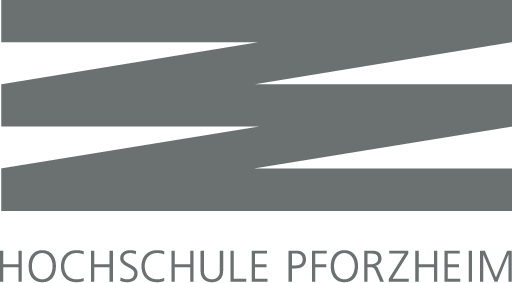
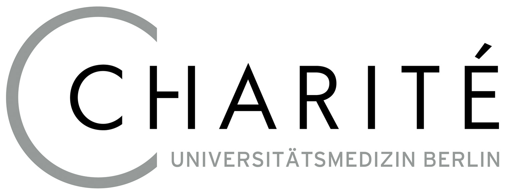

Software Developer 2
General Motors
After being promoted to Software Developer 2, I worked to take on more initiatives and partner with stakeholders to better increase the quality of product being created. The web application project I was working on at the time Test Lifecycle Management (TLM) was migrated to Azure and I worked to split the API into multiple microservices. The goal of the microservice refactor was to improve our deployment efficiency by allowing us to only build and deploy changed microservices. The refactor also allowed greater customization for scaling the application, we were able to minimize the usage of various services to keep cloud hosting costs down.
I worked along side a co-worker to create a standalone application to interface with TLM to assist labs with on boarding. Many labs had complex templates which were designed in excel sheets. Our tool allowed the excel sheets to be quickly converted to the equivalent TLM data models and imported using external API endpoints. This reduced the process of making large changes to templates from taking multiple hours to minutes and changes could be quickly made and imported. For this application I worked closely with our business partners to implement additional validation, add support for features that were being developed in parallel in TLM and provide immediate support as problems were found.
During my time at GM I was also assigned ownership of CICVAD, another web application. CICVAD was used as a managment system for external suppliers to submit designs and proposals for components. A GM employee would then review the submitted component and request changes or approve it. While I was the designated owner for CICVAD I was responsible for rotating software keys, fixing bugs, and upgrading dependencies to match with GM's technical standards. The largest upgrade performed was migrating the application from being hosted on a deprecated external platform to a in house hosted platform. By migrating the application a costly renewal fee was avoided.
Software Developer 1
General Motors
When I first started at General Motors, I was working on the Janus project. Janus is an in house web application focused on managing the lifecycle of projects. It enabled creating a plan to manage a project from start to finish and track all tasks underneath it that needed to be completed. I worked on many different facets of Janus including increasing Test Automation, expanding the in-application reporting feature, enabling users from outside the company to visit Janus.
I eventually moved to a second web application project called Test Lifecycle Management (TLM). TLM was similar to Janus however it focused primarily on creating customized requests to be sent to labs and tracking the state of the request as the lab preformed the specified test. While working on TLM I had a large focus on the feature for 'attribute groups' which allowed users to create predefined groups of fields to be added to requests and could be shared across labs. For example a attribute group could be used to represent a selectable test dummy and configure various details about it.
Computer Science Grader
Pennsylvania State University
I worked as a grader for Penn State's Computer Science 102 class. In this class students were taught about functions, parameters, recursion, arrays, and debugging with Python. I was initially assigned to grade 50 students for each assignment, however thanks to the positive feedback I received from the professor and students my share grew to grading 100 students for each lab and assignment.
Student Researcher
Rocks Ethics Institute
For a research project my team and I investigated security vulnerabilities in shipping ports caused by automation. We identified key areas where automation was present and what risks were posed. We additionally used Python and Jupyter to map out different ports and what they regularly received and where it traveled further to in the country. With this information we were able to simulate the impacts of failures by showing what areas of the country and goods would be impacted if a port failed.

Software Development Intern
Pforzheim University
At Pforzheim University I worked primarily on a project to implement a system for students and faculty to reset their passwords. Previously, you would need to come to the IT desk where the password would be reset manually. I developed a webpage where a user could provide the answer to a security question and reset their password to a randomly generated password. This reduced work for the IT department as well as enhanced user's experience to allow them to reset their password from anywhere.
Information Technology Intern
Pforzheim District Bureau
While living in Pforzheim for a summer I worked with the District Bureau as an intern. My responsibilities were primarily working on upkeeping servers for the city. This included doing a migration of the cities payroll servers to Windows 10. Additionally I would travel out to various areas around the city when servers encountered issues and assist in fixes.

Software Engineering Intern
Charité University Medical School and Hospital
At Charité I worked on a project to help automate the creation of doctors letters to be sent to patients. This was developed as a C# plugin for Microsoft Work that would automatically fetch relevant patient data and format the data into standardized tables and information. The purpose was to standardized letters across doctors as well as to expedite the formulaic portions so doctors could prioritize the important messages for patients. This saved an average of 1-2 hours in time per letter for doctors.
An additional project I worked on was a specialize filter for incoming patient data. The data was being transferred via Mirth software and the filter was created to convert the data directly into a format suitable for the patient database. This allowed for patient data to be quickly sent across multiple facilities and stored in a appropriate format.